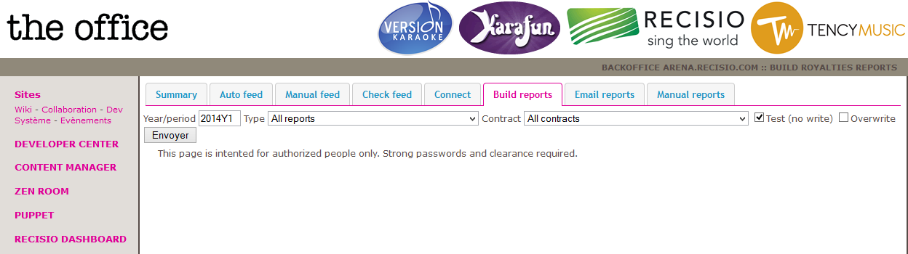
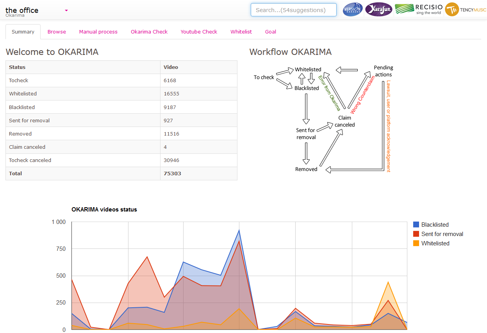
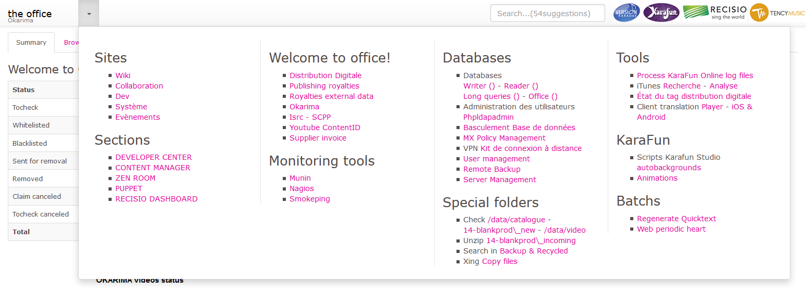
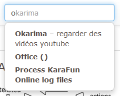
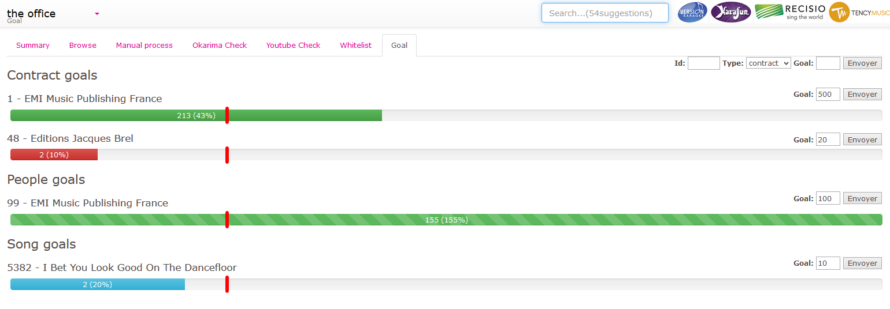
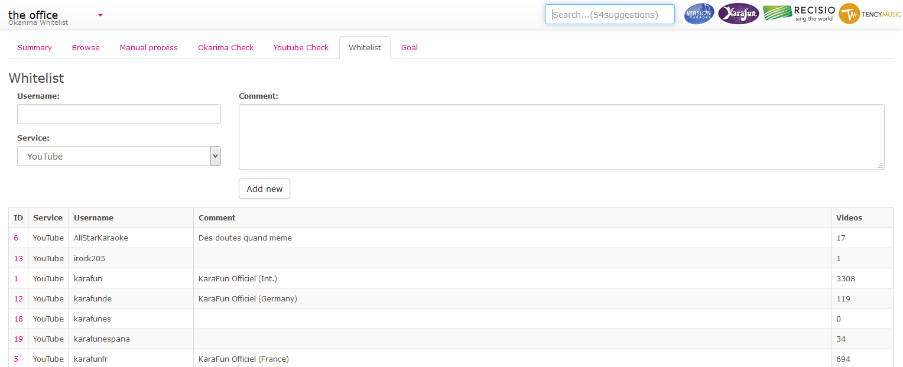
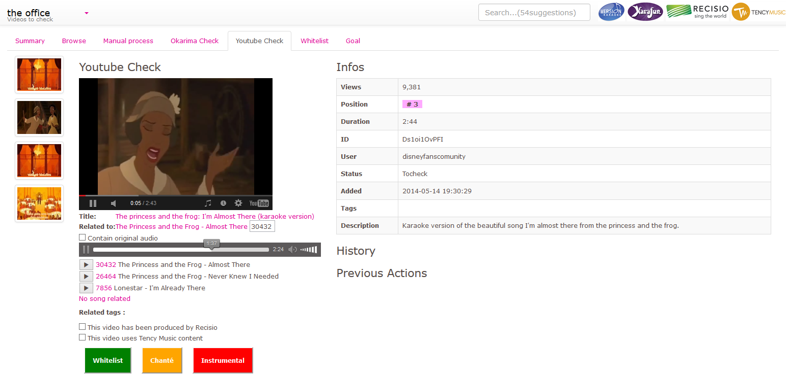

Une présentation de Florent Machen pour Recisio
Je suis votre ami ;)
Je veux votre bonheur
Je suis là pour rendre votre outil de travail cool
Top méga fun
Amélioration constante du backoffice
Souhait d'une refonte ergonomique, mais beaucoup de travail
D'où un test sur weboffice
Test en cours, mais échange de mi parcours

Petit état des lieux.
rataplan, rataplan, rataplan
« Interj. Onomatopée dont on se sert pour exprimer le Bruit du tambour. »
Incroyable o_O



Mais les questions et remarques ne comptent pas dans le temps de présentation ;)
Alors allez y ! J'ai fait tout ça pour ce moment.
  